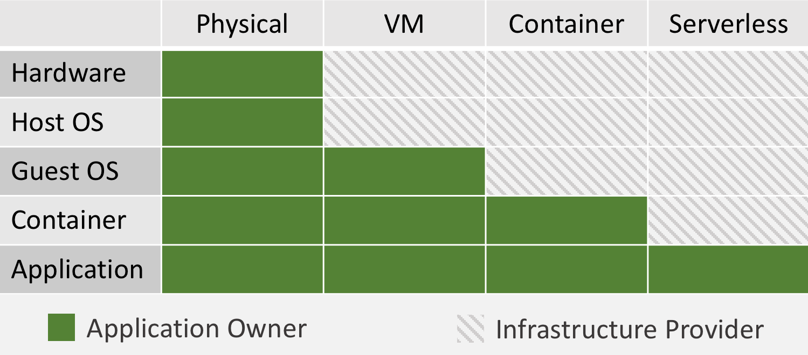

Serverless is an evolutionary paradigm in cloud computing where you run your applications and services without explicitly provisioning/managing the servers (and hence serverless). With the serverless offering, cloud providers are finally delivering on the true promise of the cloud — infinite capacity and automatic scaling with no scripts/configurations to manage. In this model, cloud providers take full responsibility of operating and managing the infrastructure, in turn helping businesses focus on their high value application.

The cloud providers offer serverless compute time by providing “Function as a Service” (FaaS). With FaaS, every time your code is invoked, the FaaS provider runs your code on a server that is provisioned, optimized and patched with the latest updates.
What is Jekyll?
Jekyll is a simple, blog-aware, static site generator.
You create your content as text files (Markdown), and organize them into folders. Then, you build the shell of your site using Liquid-enhanced HTML templates. Jekyll automatically stitches the content and templates together, generating a website made entirely of static assets, suitable for uploading to any server.
Jekyll happens to be the engine behind GitHub Pages, so you can host your project’s Jekyll page/blog/website on GitHub’s servers for free.